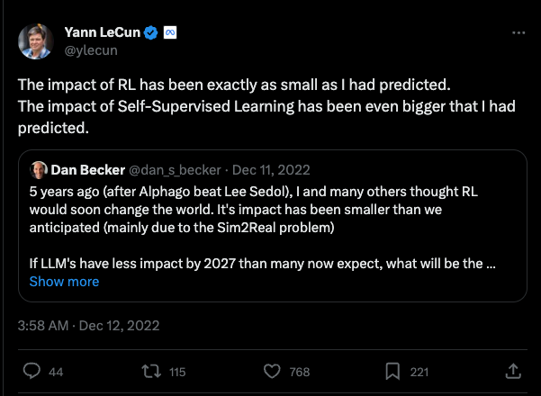

18 General Concepts
18.1 Signal and Noise
The signal represents the systematic, non-random effects in the data. The noise is the unpredictable, unstructured and non-systematic, randomness around the signal.
A slightly different, and also useful, definition of noise stems from intelligence analysis. The signal is the information we are trying to find, the noise is the cacophony of other information that obscures the signal. That information might well be a signal for something else but it is irrelevant or useless for the event the intelligence analyst is trying to predict.
Information not being relevant for the signal we are trying to find is the key. In the view of the data scientist, that information is due to random events.
Finding the signal is not trivial, different analysts can arrive at different models to capture it. Signals can be obscured by noise. Multiple signals can hide in the data, for example, short-term and long-term cyclical trends in time series data. What appears to be a signal might just be random noise that we mistake for a systematic effect.
Example: Theophylline Concentration
Figure 18.1 shows the concentration of the drug theophylline over 24 hours after administration of the drug in two groups of patients. There are 98 data points of theophylline concentration and measurement time. What are the signals in the data? What is noise?
The first observation is that the data points are not all the same over time, otherwise they would fall on a horizontal straight line: there is variability in the data. Separating signal and noise means attributing this variability to different sources: some systematic, some random.
Focusing on either the open circles (group 1) or the triangles (group 2), you notice that points that are close in time are not necessarily close in the concentration measurement. Not all patients were measured at exactly the same time points, but at very similar time points. For example, concentrations were measured after about 7, 9, and 12 hours. The differences in the concentration measurements among the patients receiving the same dosage might be due to patient-to-patient variability or measurement error.
Focusing on the general patterns of open circles and triangles, it seems that the triangles appear on average below the average circle a few hours after administration. Absorption of theophylline into the body and elimination from the body appear to be different in the two groups.
Much of the variability in the data seems to be a function of time. Shortly after administering the drug the concentration rises, reaches a maximum level, and declines as the drug is eliminated from the body. Note that this sentence describes a general overall trend in the data.
Which of these sources of variability are systematic—the signals in the data— and which are random noise?
Patient-to-patient variability within a group at the same time of measurement: we attribute this to random variation among the participants.
Possible measurement errors in determining the concentrations: random noise
Overall trend of drug concentration over time: signal
Differences among the groups: signal
These assignments to signal and noise can be argued. For example, we might want to test the very hypothesis that there are no group-to-group differences. If that hypothesis is true, any differences between the groups we discern in Figure 18.1 would be due to chance; random noise in other words.
The variability between patients could be due to factors such as age, gender, medical condition, etc. We do not have any data about these attributes. By treating these influences as noise, we are making important assumptions that their effects are irrelevant for conclusions derived from the data. Suppose that the groups refer to smokers and non-smokers but also that group 1 consists of mostly men and group 2 consists of mostly women. If we find differences in theophylline concentration over time among the groups, we could not attribute those to either smoking status or gender.
Finding the signal in noisy data is not trivial. The opposite can also be difficult: not mistaking noise for a signal. Figure 18.2 is taken from Silver (2012, 341) and displays six “trends”. Four of them are simple random walks, the result of pure randomness. Two panels show the movement of the Dow Jones Industrial Average (DJIA) during the first 1,000 trading days of the 1970s and 1980s. Which of the panels are showing the DJIA and which are random noise?
What do we learn from this?
Even purely random data can appear non-random over shorter sequences. We can easily fall into the trap of seeing a pattern (a signal) where there is none. Sometimes there is no signal at all. After drawing two unlikely poker hands in a row there is not a greater chance of a third unlikely hand unless there is some systematic effect (cards not properly shuffled, game rigged). Our brains ignore that fact and believe that we are more lucky than is expected by chance. Paul the Octopus predicted the winner of 12 out of 14 soccer matches correctly; I would argue purely by chance.
Data that contains clear long-run signals—the stock market value is increasing over time—can appear quite random on shorter sequences. One a day-to-day basis predicting whether the market goes up or down is very difficult. In the long run ups and downs are almost equally likely. Upswings have a slight upper hand and are on average greater than the downswings, increasing the overall value in the long term. Traders who try to beat the market over the short run have their work cut out for them.
By the way, panels D and F in Figure 18.2 are from actual stock market data. Panels A, B, C, and E are pure random walks. It would not be surprising if some investors would bet money on “trend” C.
Exercise: Southern Oscillation Index (SOI)
The Southern Oscillation Index (SOI) is a standardized index based on the observed sea level pressure differences between Tahiti and Darwin, Australia. The SOI is one measure of the large-scale fluctuations in air pressure occurring between the western and eastern tropical Pacific (i.e., the state of the Southern Oscillation) during El Niño and La Niña episodes.
In general, smoothed time series of the SOI correlate highly with changes in ocean temperatures across the eastern tropical Pacific. The negative phase of the SOI represents below-normal air pressure at Tahiti and above-normal air pressure at Darwin. Prolonged periods of negative (positive) SOI values coincide with abnormally warm (cold) ocean waters across the eastern tropical Pacific typical of El Niño (La Niña) episodes (Figure 18.3).
According to Wikipedia, there have been about 30 El Niño episodes since 1950 with strong El Niño events in 1982–83, 1997–98, and 2014–16. You recognize El Niño when the SOI dips negative for a period of time. La Niña is marked by periods of positive SOI values.

- What is the signal and the noise in these data?
- Is it possible that there are multiple signals in these data, associated with different time horizons?
18.2 Types of Statistical Learning
The primary distinction of learning methods in data science is between supervised and unsupervised methods of learning (Figure 18.4). However, there are other important forms of learning from data, for example, self-supervised learning and reinforcement learning (RL), which are important for machine learning and artificial intelligence applications.
{kind=link}
Supervised Learning
Definition: Supervised Learning
Supervised learning trains statistical learning models through a target variable.
Supervised learning is characterized by the presence of a target variable (dependent variable, response variable, output variable); it is the attribute we wish to model. The training and test data sets contain values for the target variable, also called the labels in machine learning. The other variables in the data set are potentially input variables. This is the predominant form of learning in data science applications.
Goals of supervised learning include to
- Predict the target variable from input variables.
- Classify observations into categories of the target variable based on the input variables.
- Develop a function that approximates the underlying relationship between inputs and outputs.
- Understand the relationship between inputs and outputs.
- Group the observations into sets of similar data based on the values of the target variable and based on values of the inputs.
- Reduce the dimensionality of the problem by transforming target and inputs from a high-dimensional to a lower-dimensional space.
- Test hypotheses about the target variable.
Studies can pursue one or more of these goals. For example, you might be interested in understanding the relationship between target and input variables and use that relationship for predictions as well as testing of hypotheses.
The name supervised learning comes from thinking of learning in an environment that is supervised by a teacher. The teacher asks questions for which they know the correct answer (the ground truth) and judge a student’s response to the questions. The goal is to increase students’ knowledge as measured by the quality of their answers. But we do not want students to just memorize answers, we want to teach them to be problem solvers, to apply the knowledge to new problems, to be able to generalize.
The parallel between the description of supervised learning in a classroom and training an algorithm on data is obvious: the problems asked by the teacher, the learning algorithm, are the data points, \(Y\) is the correct answer, the inputs \(x_{1},\cdots,x_{p}\) are the information used by the students to answer the question. The discrepancy between question and answer is measured by a loss function: \[ (y - \widehat{y})^2 = (y - \widehat{f}\left( x_{1},\cdots x_{p} \right))^2 \] or some such metric. Teaching the students reduces the loss as their answers get closer to the correct answers, the ground truth. Training stops when the students can transfer knowledge to solve previously unseen problems. We are not interested in teaching students to memorize the answers to the questions asked in class. If that were the case we would just train until the loss function reaches zero. We do not know whether the students have learned the concepts or just memorized the answers. To avoid the latter, we need to validate the students’ knowledge on new questions and not overdo memorization.
Table 18.1 contains a non-exhaustive list of algorithms and models you encounter in supervised learning.
| Linear regression | Nonlinear regression | Regularized regression (Lasso, Ridge, Elastic nets) |
| Local polynomial regression (LOESS) | Smoothing splines | Kernel methods |
| Logistic regression (binary & binomial) | Multinomial regression (nominal and ordinal) | Poisson regression (counts and rates) |
| Decision trees | Random forests | Bagged trees |
| Adaptive boosting | Gradient boosting machine | Extreme gradient boosting |
| Naïve Bayes classifier | Nearest-neighbor methods | Discriminant analysis (linear and quadratic) |
| Principal component regression | Partial least squares | Generalized linear models |
| Generalized additive models | Mixed models (linear and nonlinear) | Models for correlated data (spatial, time series) |
| Support-vector machines | Neural networks | Extreme gradient boosting |
There is a lot to choose from, and for good reason. The predominant application of data analytics is supervised learning with batch (or mini-batch) data. In batch data analysis the data already exist as a historical data source in one place. We can read all records at once or in segments (called mini-batches). If we have to read the data multiple times, for example, because an iterative algorithm passes through the data at each iteration, we can do so.
Unsupervised Learning
Definition: Unsupervised Learning
In unsupervised learning methods a target variable is not present.
Unsupervised learning does not utilize a target variable; hence it cannot predict or classify observations. However, we are still interested in discovering structure, patterns, and relationships in the data.
The term unsupervised refers to the fact that we no longer know the ground truth because there is no target variable. The concept of a teacher who knows the correct answers and supervises the learning progress of the student does not apply. In unsupervised learning there are no clear error metrics by which to judge the quality of an analysis, which explains the proliferation of unsupervised methods and the reliance on heuristics. For example, a 5-means cluster analysis will find five groups of observations in the data, whether this is the correct number or not, and it is up to us to interpret what differentiates the groups and to assign group labels.
Often, unsupervised learning is used in an exploratory fashion, improving our understanding of the joint distributional properties of the data and the relationships in the data. The findings then help lead us toward supervised approaches.
A coarse categorization of unsupervised learning techniques also hints at their application:
Association analysis: which values of the variables \(x_{1},\cdots,x_{p}\) tend to occur together in the data? An application is market basket analysis, where the \(X\)s are items are in a shopping cart (or a basket in the market), and \(x_{i} = 1\) if the \(i\)th item is present in the basket and \(x_{i} = 0\) if the item is absent. If items frequently appear together, bread and butter, or beer and chips, for example, then maybe they should be located close together in the store. Association analysis is also useful to build recommender systems: shoppers who bought this item also bought the following items
Cluster analysis: can data be grouped based on \(x_{1},\cdots,x_{p}\) into sets such that the observations within a set are more similar to each other than they are to observations in other sets? Applications of clustering include grouping customers into segments. Segmentation analysis is behind loyalty programs, lower APRs for customers with good credit rating, and churn models.
Dimension reduction: can we transform the inputs \(x_{1},\cdots,x_{p}\) into a set \(c_{1},\cdots,c_{k}\), where \(k \ll p\) without losing relevant information? Applications of dimension reduction are in high-dimensional problems where the number of inputs is large relative to the number of observations. In problems with wide data, the number of inputs \(p\) can be much larger than \(n\), which eliminates many traditional methods of analysis from consideration.
Methods of unsupervised learning often precede supervised learning; the output of an unsupervised learning method can serve as the input to a supervised method. An example is dimension reduction through principal component analysis (PCA) prior to supervised regression. Suppose you have \(n\) observations on a target variable \(Y\) and a large number of potential inputs \(x_{1},\cdots,x_{p}\) where \(p\) is large relative to \(n\). PCA computes linear combinations of the \(p\) inputs that account for decreasing amounts of variability among the \(X\)s. These linear combinations are called the principal components. For example, the first principal component explains 70% of the variability in the inputs, the second principal component explains 20% and the third principal component 5%. Rather than building a regression model with \(p\) predictors, we use only the first three principal components as inputs in the regression model. The resulting regression model is called a principal component regression (PCR) because its inputs are the result of a PCA. The PCA is an unsupervised model because it does not use information about \(Y\) in forming the principal components. If \(p = 250\), using the first three principal components replaces
\[ Y = \beta_{0} + \beta_{1}{\ x}_{1} + \beta_{2}x_{2} + \beta_{3}x_{3} + \beta_{4}x_{4} + \cdots + \beta_{250}x_{250} + \epsilon \] with \[ Y = \alpha_{0} + \alpha_{1}c_{1} + \alpha_{2}c_{2} + \alpha_{3}c_{3} + \epsilon \]
where \(c_{1}\) denotes the first principal component, itself a linear combination of the 250 inputs
\[ c_{1} = \gamma_{1}x_{1} + \gamma_{2}x_{2} + \gamma_{3}x_{3} + \cdots + \gamma_{250}x_{250} \]
Self-supervised Learning
Self-supervised learning (SSL) is a form of learning that combines elements of supervised and unsupervised learning. Like unsupervised learning, the data is not labeled, that is, there is no target variable. Like the majority of supervised learning applications, the goal is to predict or classify observations.
SSL accomplishes these seemingly contradictory features by implicitly and autonomously extracting relationships, patterns, and knowledge from the training data. Generative pretrained transformers (GPT), for example, are trained in a self-supervised way as autoregressive language model. During training the model learns the relevant patterns and relationships in the text input data.
In a second step, applications are built on top of the foundation models trained in a self-supervised fashion. For example, ChatGPT is a question-answer applications built on top of the GPT foundation model.
Reinforcement Learning
Reinforcement learning (RL) is unique to machine learning and does not fall neatly in the supervised/unsupervised learning categories. It is a powerful method that received much attention when algorithms were trained on data to play games.
The approach, based on reinforcement learning, was fundamentally different from the expert system-based approach used so far to teach computers how to play games. An expert system translates the rules of the game into machine code and adds strategy logic. For example, the Stockfish open-source chess program, released first in 2008, has developed with community support into (one of) the best chess engines in the world. In 2017, Google’s DeepMind released AlphaZero, a chess system trained using reinforcement learning. After only 24 hours of training, the data-driven AlphaZero algorithm crushed Stockfish, the best chess engine humans have been able to build over 10 years.
Previously, Google’s DeepMind had developed AlphaGo, a reinforcement-trained system that beat the best Go player in the world, Lee Sedol, four to one. This was a remarkable achievement as Go had been thought to be so complex and requiring intuition that would escape computerization at the level of expert players.
In reinforcement learning, an agent (a player) is taking actions (makes moves) in an environment (the game). The agent learns by interacting with the environment by receiving feedback on the moves. Actions are judged by a reward function (a score) and the system is trained to maximize the sum of future rewards. In other words, given your current position in the game, choose the next move to maximize the score from here on out.
An interesting difference between AlphaGo and AlphaZero is the nature of the training data. Both systems are trained using reinforcement learning. AlphaGo was trained on records of many expert-level games. It was trained to play against historic experts. Success was getting better compared to how human experts played. AlphaZero was trained by playing against itself. Success was beating its former self.
Unlike supervised learning, inputs and outputs do not need to be present in reinforcement learning. The technique is commonly used in robotics, gaming, and recommendation systems.
In 2017, when AlphaGo beat Lee Sedol, it was thought that reinforcement learning would change the world. Despite its remarkable achievement in gameplay and robotics, the impact of RL fell short of expectations.

Why did RL fall short? Developing and training reinforcement learning models is an expensive undertaking. The barrier to entry is very high, limiting RL research and development to large tech-savvy organizations. The main reason is the Sim2Real problem mentioned in the tweet above. Reinforcement learning trains an agent in a simulated, artificial environment. The real world is much more complex and transferring training based on simulation to reality is difficult. The RL agents end up performing poorly in real applications.
Until recently, a limitation of RL was the need for a good reward function. It is important that actions in the environment are properly judged. In situation where the result of a move is difficult to judge, reinforcement learning was difficult to apply. For example, in natural language processing, where an action produces some prose, how do we rate the quality of the answer?
This was the problem faced by systems like ChatGPT. How do you score the answer produced during training to make sure the algorithm continuously improves? The solution was a form of reinforcement learning modified by human intervention. RLHF, reinforcement learning with human feedback, uses human interpreters to assign scores to the actions (the Chat-GPT answers).
18.3 Regression and Classification
Regression and the Regression to the Mean Fallacy
The term regression was coined by Sir Francis Galton in 1877 in his study of genetics. Galton observed a relationship between physical attributes of offspring and their parents. He found that offspring deviated less from the mean value of the population than their parents did. Taller parents tend to have taller children, but children of taller parents tend to be shorter than their parents and children of shorter parents tend to be taller than their parents.
The cause Galton attributed to this phenomenon—which he called regression toward mediocrity—is controversial, his arguments had implications about natural selection and eugenics. As a statistical phenomenon, it is well understood. Attributes are distributed randomly; if you draw an extreme observation from a symmetric distribution, then a subsequent draw is likely to be less extreme, there is a regression to the mean.
Figure 18.6 displays this phenomenon for the distribution of HDL cholesterol values in a single person. Our cholesterol levels vary from day to day and if the distribution is normally distributed, it might look like the density in the figure, centered at a mean of 50 mg/dl. Suppose you measure a person’s HDL cholesterol, and it results in a first measurement of 30 mg/dl. The value is on the low side of the distribution, but it is not implausible. A follow-up measurement is more likely to be observed near the center of the distribution where most of the probability density is located. A second measurement might thus return a value of 55 mg/dl. A regression to the mean occurred between the first and second measurements.
{kind=link}
Assignment: Random Multiple-choice Answers
Suppose you administer a multiple-choice exam to a group of students who choose their answers completely at random.
The students with the top 10% of the scores are asked to take the exam a second time. Again, they answer the multiple-choice questions at random.
What percentage of the questions will the students taking the second exam get correct?
How does this relate to the regression to the mean phenomenon?
The term regression has evolved to describe statistical methods that model the mean behavior of an attribute and separate it from non-systematic, random behavior. The regression to the mean phenomenon does not mean regression methods are bad. It is a fact of random variation and a real fallacy when interpreting data. In the cholesterol example, is the change from 30 to 50 mg/dl of HDL due to natural variation or due to a systematic effect, for example, a medical intervention? Regression is intended to separate signal from noise. The regression to the mean fallacy is to misinterpret random variation as a signal.
Example: Testing a Treatment Effect
You want to determine whether a change in diet reduces the risk of heart disease. From a group of individuals, you select those at greatest risk of heart disease and put them on the diet. After some time, you reassess their risk of heart disease.
Because of regression to the mean, the follow-ups will likely show an improvement even if the diet has no effect at all.
The correct way of studying whether the diet has an effect is to randomly divide the individuals into two groups and assign the diet to one group (the treated group) while the other group stays on their normal diet. If the individuals in the treated group improve more than the untreated group, to a degree that cannot be attributed just to chance, then we can make a statement that the diet is effective in reducing the risk of heart disease.
Regression Problems
Definition: Regression Model
A regression model is a statistical model that describes how the mean of a random variable depends on other factors. The factors are often called inputs, predictor variables, or regressors.
The variable whose mean is modeled is called the target variable, response variable, or dependent variable.
Regression models are not just for continuous response data, they apply to all response types. The defining characteristic is to model the mean as a function of inputs:
\[ \text{E}\lbrack Y\rbrack = f\left( x_{1},\cdots,x_{p},\theta_{1},\cdots,\theta_{k} \right) \]
This expression explicitly lists parameters \(\theta_{1},\cdots,\theta_{k}\) in the mean function. All regression models involve the estimation of unknown, fixed quantities (=parameters). As seen in the non-linear regression example in the introduction, the number of parameters and the number of inputs do not have to be directly related.
Even if the target variable is categorical, we might be interested in modeling the mean of the variable. The simplest case of categorical variables are binary variables with two levels (two categories). This is the domain of logistic regression. As seen earlier, if the categories are coded numerically as \(Y = 1\) for the category of interest (the “event”) and \(Y = 0\) for the “non-event” category, the mean of \(Y\) is a probability. A regression model for a binary target variable is thus a model to predict probabilities. It is sufficient to predict one of the probabilities in the binary context, we call this the event probability \(\pi\). The complement can be obtained by subtraction, \(1 - \pi\).
Extending this principle to more than two categories leads to regression models for multinomial data. If the category variable has \(k\) levels with labels \(C_{1}, \cdots, C_{k}\), we are dealing with \(k\) probabilities; \(\pi_{j}\) is the probability to observe category \(C_{j}\). Suppose that we are collecting data on ice cream preferences on college campuses. A random sample of students are given three ice cream brands in a random order and report the taste as \(C_{1} =\)’yuck’, \(C_{2} =\)’meh’, and \(C_{3} =\)’great’. Modeling these data with regression techniques, we develop a model for the probability to observe category \(j\) as a function of inputs. A multinomial version of logistic regression looks like the following:
\[ \text{Pr}\left( Y = j \right) = \frac{\exp\left\{ \beta_{0j} + \beta_{1j}x_1 + \cdots + \beta_{pj}x_p \right\}} {\sum_{l=1}^k \exp\{\beta_{0l} + \beta_{1l}x_1 + \cdots + \beta_{pl}x_p\}} \]
This is a rather complicated model, but we will see later that it is a straightforward generalization of the two-level case. Instead of one linear predictor we now have separates predictors for the categories. The point of introducing the model here is to show that even in the categorical case we can apply regression methods—they predict category probabilities rather than the mean of a continuous variable.
Classification Problems
Classification applies to categorical target variables that take on a discrete number of categories, \(k\). In the binary case \(k = 2\), in the multinomial case \(k > 2\).
The classification problem is to predict not the mean of the variable but to assign a category to an observation. In image classification, for example, an algorithm is trained to assign the objects seen on an image to one of \(k\) possible categories. In the ImageNet competition, \(k=1000\).
The algorithm that maps from input variables to a category is called a classifier. The logic that turns the model output into a category assignment is called the classification rule. Applications of classifications occur in many domains, for example,
- Medical diagnosis: Given a patient’s symptoms, assign a medical condition.
- Financial services: Determine whether a payment transaction is fraudulent.
- Customer intelligence: Assign a new customer to a customer profile (segmentation).
- Computer vision: Detect defective items on an assembly line.
- Computer vision: Identify objects in an image.
- Text classification: Categorize incoming emails as spam.
- Text classification: Categorize the sentiment of a document as positive, neutral, or negative.
- Digital marketing: predict which advertisement a user is most likely to click.
- Search engine: Given a user’s query and search history predict what link they will follow.
Classification problems can be presented as prediction problems; rather than the mean of a random variable, they predict the membership in a category.
From probabilities to classification
To determine category membership many classification models first go through a predictive step, predicting the probabilities that an observation belongs to the \(k\) categories. The classification rule is then based to assign an observation to one category based on the predicted probabilities; usually the category with the highest predicted probability.
Suppose we have a three-category problem with \(\pi_{1} = 0.7,\ \pi_{2} = 0.2,\pi_{3} = 0.1\), and you are asked to predict the category of the next randomly drawn observation. The most likely category to appear is \(C_{1}.\)
This classification rule is known as the Bayes classifier.
Definition: Bayes Classifier
The Bayes classifier assigns an observation with inputs \(x_{1},\cdots,x_{p}\) to the class \(C_{j}\) for which
\[ \Pr(Y = j \, | \, x_{1},\cdots,x_{p}) \]
is largest.
The Bayes classifier is written as a conditional probability, the probability to observe category \(C_{j}\), given the values of the input variables. The reason for this will become clearer when we cover different methods for estimating category probabilities. Some methods for deriving category probabilities assume that the \(X\)s are random. In regression problems it is assumed that they are fixed, so there is no difference between the unconditional probability \(\Pr\left( Y = j \right)\) and the conditional probability \(\Pr( Y = j \, | \, x_1,\cdots,x_p)\).
We can now see the connection between regression and classification. Develop first a regression model that predicts the category probabilities \(\Pr( Y = j \, | \, x_1,\cdots,x_p)\). Then apply a classification rule to assign a category based on the predicted probabilities. If you side with the Bayes classifier, you choose the category that has the highest predicted probability. For a 2-category problem where events are coded as \(Y=1\) and non-events are coded as \(Y=0\), this means classifying an observation as an event if
\[ \Pr\left( Y = 1\, | \,x_1,\cdots,x_p \right) \geq 0.5 \]
Misclassification rate
While the mean-squared prediction error is the standard measure of model performance in regression models, the performance of a classification model is measured by statistics that contrast the number of correct and incorrect classifications. The most important of these metrics is the misclassification rate (MCR).
Definition: Misclassification Rate
The misclassification rate (MCR) of a classifier is the proportion of observations that are predicted to fall into the wrong category. If \(y_{i}\) is the observed category of the \(i\)th data point, and \({\widehat{y}}_{i}\) is the predicted category, the MCR for a sample of \(n\) observations is
\[ \text{MCR} = \frac{1}{n}\sum_{i = 1}^{n}{I\left( y_{i} \neq {\widehat{y}}_{i} \right)} \]
\(I(x)\) is the indicator function,
\[ I(x) = \left\{ \begin{matrix} 1 & \text{if }x\text{ is true} \\ 0 & \text{otherwise} \end{matrix} \right. \]
The misclassification rate is simply the proportion of observations we predicted incorrectly. Since the target is categorical we do not use differences \(y_i - \widehat{y}_i\) to measure the closeness of target and prediction. Instead, we simply check whether the observed and predicted categories agree (\(y_i = \widehat{y}_i\)). The term \(\sum_{i = 1}^{n}{I\left( y_{i} \neq {\widehat{y}}_{i} \right)}\) counts the number of incorrect predictions. The complement of MCR, the proportion predicted correctly, is called the accuracy of the classification model.
Confusion matrix
The confusion matrix in a classification model with \(k=2\) categories (a binary target) is a 2 x 2 matrix that contrasts the four possibilities of observed and predicted outcomes.
Definition: Confusion Matrix
The confusion matrix in a classification problem is the cross-classification between the observed and the predicted categories. In a problem with two categories, the confusion matrix is a 2 x 2 matrix.
The cells of the matrix contain the number of data points that fall into the cross-classification when the model’s decision rule is applied to \(n\) observations. If one of the categories is labeled positive and the other is labeled negative, the cells give the number of true positive (TP), true negative (TN), false positive (FP), and false negative (FN) predictions.
The following table shows the layout of a typical confusion matrix for a 2-category classification problem. A false positive prediction, for example, is to predict a positive (“Yes”) result when the true state (the observed state) was negative. A false negative result is when the decision rule assigns a “No” to an observation with positive state.
| Observed Category | ||
|---|---|---|
| Predicted Category | Yes (Positive) | No (Negative) |
| Yes (Positive) | True Positive (TP) | False Positive (FP) |
| No (Negative) | False Negative (FN) | True Negative (TN) |
Accuracy of the model is calculated as the proportion of observations that fall on the diagonal of the confusion matrix. The misclassification rate is the complement: the proportion of off-diagonal cells.
Based on the four cells in the confusion matrix many statistics can be calculated (Table 18.3).
| Statistic | Calculation | Notes |
|---|---|---|
| False Positive Rate (FPR) | FP / (FP + TN) | The rate of the true negative cases that were predicted to be positive |
| False Negative Rate (FNR) | FN / (TP + FN) | The rate of the true positive cases that were predicted to be negative |
| Sensitivity | TP / (TP + FN) = 1 – FNR | This is the true positive rate; also called Recall |
| Specificity | TN / (FP + TN) = 1— FPR | This is the true negative rate |
| Accuracy | (TP + TN) / (TP + TN + FP + FN) | Overall proportion of correct classifications |
| Misclassification rate | (FP + FN) / (TP + TN + FP + FN) | Overall proportion of incorrect classifications, 1 – Accuracy |
| Precision | TP / (TP + FP) | Ratio of true positives to anything predicted as positive |
| Detection Rate | TP / (TP + TN + FP + FN) | |
| No Information Rate | \(\frac{\max(TP+FN,FP+TN)}{TP+TN+FP+FN}\) | The proportion of observations in the larger observed class |
| F Score | \(\frac{2\text{TP}}{2\text{TP} + \text{FP} + \text{FN}}\) | Harmonic mean of precision and recall |
The model accuracy is measured by the ratio of observations that were correctly classified, the sum of the diagonal cells divided by the total number of observations. The misclassification rate is the complement of the accuracy, the sum of the off-diagonal cells divided by the total number of observations.
The sensitivity (recall) is the ratio of true positives to what should have been predicted as positive. The specificity is the ratio of true negatives to what should have been predicted as negative. These are not complements of each other; they are calculated with different denominators.
The problem with focusing solely on accuracy to measure the quality of a classification model is that the two possible errors, false positives and false negatives might not be of equal consequence. For example, it might not matter how accurate a model is unless it achieves a certain sensitivity—the ability to correctly identify positives.
Consider the data in the Table 18.4, representing 1,000 observations and predictions.
| Observed Category | ||
|---|---|---|
| Predicted Category | Yes (Positive) | No (Negative) |
| Yes (Positive) | 9 | 7 |
| No (Negative) | 26 | 958 |
The classification has an accuracy of 96.7%, which seems impressive. Its false positive and false negative rates are very different, however: FPR = 0.0073, FNR = 0.7429. The model is much less likely to predict a “Yes” when the true state is “No”, than it is to predict a “No” when the true state is “Yes”. Whether we can accept a model with such low sensitivity (100 – 74.29) = 25.71% is questionable, despite the high accuracy. An evaluation of this model should consider whether the two errors, false positive and false negative predictions, are of equal importance and consequence.
It is also noteworthy that the accuracy of 96.7% is not as impressive if you check the no-information rate of the data. The proportion of observations in the larger observed class is (958 + 7)/1,000 = 0.965. The accuracy of the decision rule is only slightly larger. In other words, if you were to take a naïve approach and predict all observations as “No” without looking at the data, that naïve decision rule would have an accuracy of 96.5%. The model did not buy ads much over the naïve decision rule.
The precision of the binary classifier is the number of true positive predictions divided by all positive predictions.
The F-score (also called the \(F_1\) score) is the harmonic mean of precision and recall: \[ F_1 = \frac{2}{\text{Precision}^{-1} + \text{Recall}^{-1}} = \frac{2\text{TP}}{2\text{TP} + \text{FP} + \text{FN}} \] The \(F\) score is popular in natural language applications but is not without problems. The goal of the score is to balance both precision and recall, but the relative importance of the two depends on the problem. The \(F\) score does not take into account true negatives and is problematic if positive and negative outcomes are unbalanced.
18.4 Prediction and Explanation
The goal in developing models is to perform inference, to reach conclusions and make decisions based on data. Broadly, the goals fall into two categories:
Predictive inference: concerned with developing an algorithm that predicts the target variable well and generalizes to observations not used in training the model.
Explanatory inference: also called confirmatory inference, it is concerned with understanding the relationship between target and input variables, understanding the relevance of the inputs, and testing hypotheses about the target variable.
In machine learning, the term inference is used to describe the process of predicting new observations after training a model. Statisticians call this part of data analytics scoring the model. The predicted value is the “score” associated with the new observation. Our view of inference is broader than just predicting (scoring) observations. It includes any application of the trained model to derive information of interest: hypothesis testing, confidence and prediction intervals, predicted values, forecasts, etc.
Data projects are not necessarily either predictive or confirmatory. Many projects have elements of both, as in the following example.
Example: Dose-response Study of Insect Mortality
Figure 18.7 shows logits of sample proportions in a dose-response study of insect larvae mortality as a function of the concentration of an insecticide. Suppose \(y_{i}\) denotes the number of larvae out of \(n_{i}\) that succumb to the insecticide at concentration \(x_{i}\). The right panel of the figure shows the logit of the sample proportion \(p_{i} = \frac{y_{i}}{n_{i}}\),
\[ \log\left\{ \frac{p_{i}}{1 - p_{i}} \right\} \]
as a function of the log insecticide concentration. A simple linear model seems appropriate,
\[ \log\left\{ \frac{\text{E}\lbrack p_{i}\rbrack}{1 - \text{T}\lbrack p_{i}\rbrack} \right\} = \beta_0 + \beta_1\log_{10}x_i \]
Note that the expected value \(\text{E}\left\lbrack p_{i} \right\rbrack\) is a probability. This model is a generalization of logistic regression for binary data (a 0/1 response) to binomial sample proportions. \(\text{E}\left\lbrack p_{i} \right\rbrack = \pi_{i}\) is the probability that an insect dies when \(\log_{10}x_{i}\) amount of insecticide is applied.
The investigators want to understand the relationship between larvae mortality and insecticide concentration. The parameter estimate for \(\beta_{1}\) is of interest, it describes the change in logits that corresponds to a unit-level change in the log concentration. A hypothesis test for \(\beta_{1}\) might compare the dose-response in this study with the known dose-response slope \(c\) of a standard insecticide. The null hypothesis of this test specifies that the insecticide is as effective as the standard:
\[ H_{0}:\beta_{1} = c \]
Another value of interest in dose-response studies is the concentration that achieves a specified effect. For example, the lethal dosage \(LD_{50}\) is the concentration that kills 50% of the subjects. Determining the \(LD_{50}\) value is known as an inverse prediction problem: rather than predicting \(\text{E}\lbrack Y\rbrack\) for a given value of \(X\), we are interested in finding the value \(X\) that corresponds to a given a value of \(\text{E}\lbrack Y\rbrack\).
The \(LD_{50}\) value can be calculated from the model equation. More generally, we can find any value on the x-axis that corresponds to a particular mortality rate \(\alpha\) by solving the following equation for \(\alpha\):
\[ \text{logit}(\alpha) = \log\left\{ \frac{\alpha}{1 - \alpha} \right\} = \beta_0 + \beta_1\log_{10}x_\alpha \]
The solution is
\[ x_{\alpha} = 10^{\frac{\left( \text{logit}(\alpha) - \beta_{0} \right)}{\beta_{1}}} \]
For the special value \(\alpha = 0.5\), the \(LD_{50}\) results,
\[ LD_{50} = 10^{\frac{- \beta_{0}}{\beta_{1}}} \]
In addition to hypothesis testing about \(\beta_{1}\) and calculating the \(LD_{50}\), the investigators are also interested in predicting the mortality rate at concentrations not used in the study.
The inference in the study has explanatory (confirmatory) and predictive elements.
Many studies are not completely confirmatory or predictive, because models that are good at confirmatory inference are not necessarily good at predicting. Similarly, models that predict well are not necessarily good at testing hypotheses. Interpretability of the model parameters is important for confirmatory inference because hypotheses about the real world are cast as statements about the model parameters. Many disciplines place a premium on interpretability, e.g., biology, life sciences, economics, physical sciences, geosciences, natural resources, financial services. Experiments designed to answer specific questions rely on analytic methods designed for confirmatory inference.
Interpretability of the model parameters might not be important for a predictive model. A biased estimator that reduces variability and leads to a lower mean squared prediction error (see the next section) can be appealing in a predictive model but can be unacceptable in a project where confirmatory inference is the primary focus.